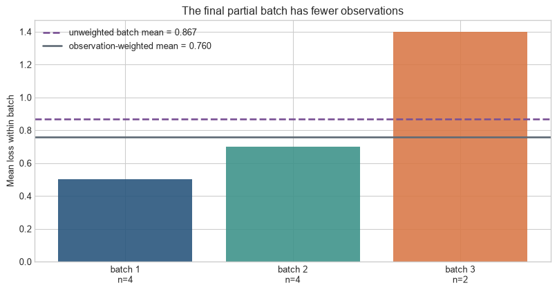
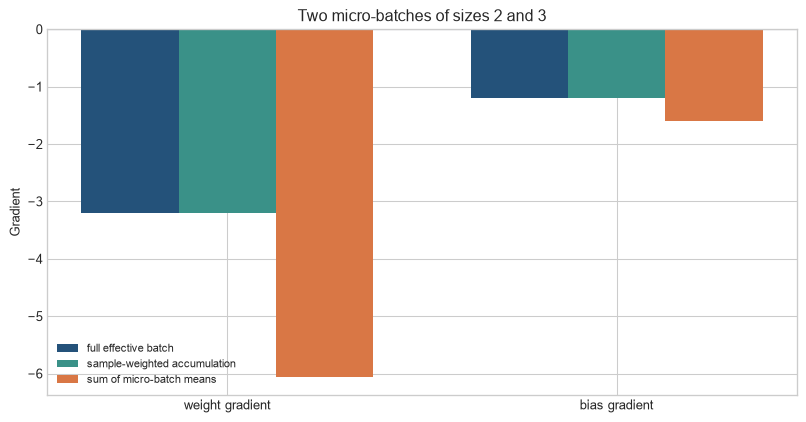
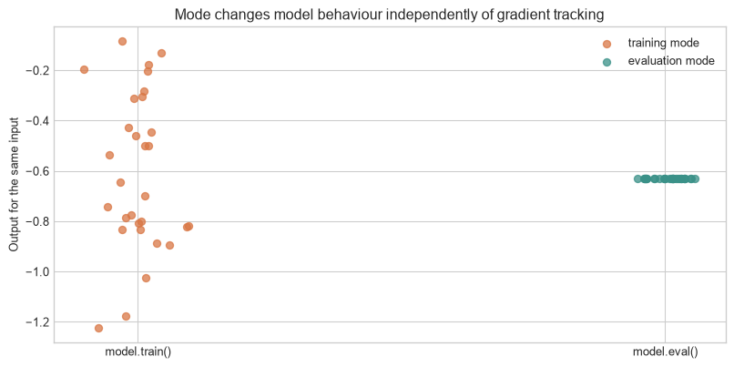
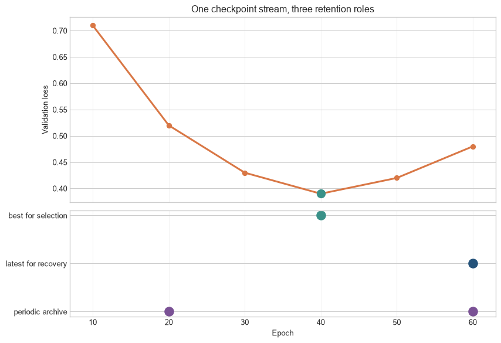
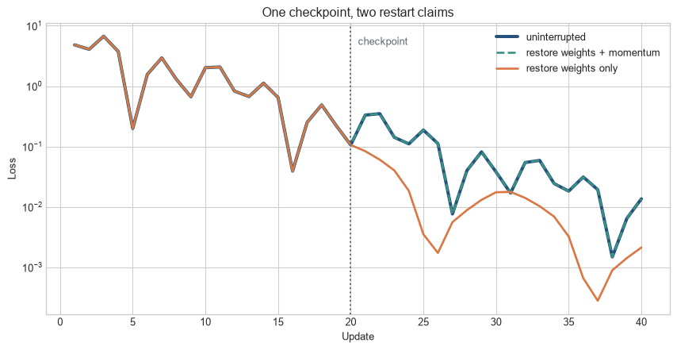

Chapter 13 defined the state transition inside an optimiser update. That transition only has a clear meaning if the surrounding loop specifies which observations contribute to it, when parameters change, when the model is evaluated, and what state survives an interruption. Two scripts can use the same architecture, loss, and optimiser but implement different learning procedures through their batch denominators, accumulation boundaries, mode changes, or checkpoint policy.
This chapter follows that surrounding state machine: loading data, batching, accumulation, validation, logging, checkpoint selection, and restart. The purpose is to state the dependencies that make a reported result reproducible, not to add a longer training-script template.
One update inside its lifecycle
Read the diagram from left to right as a dependency order. Backward passes add to an accumulation window, whereas an optimiser update occurs only at its declared boundary. Validation and checkpointing run less often, but they refer to the parameter state produced by that boundary; treating them as independent side tasks loses the state that selected the reported model.
Figure 15.1: One optimiser update sits inside a larger cycle of data loading, gradient accumulation, measurement, and recovery.
Not every update triggers validation or a checkpoint. Those operations run at configured intervals, but they depend on the update count and model state produced by the inner loop. A correct implementation makes these boundaries explicit.
Checkpoint and recovery state. A checkpoint records a model at a stated point in training. Recovering a run may also require optimiser state, scheduler state, random-number state, data position, and mixed-precision state. A saved weight file alone does not necessarily reproduce the next update.
Level 1 - Intuition
A loop coordinates several clocks
An observation is one training case. A mini-batch is the set of observations whose combined gradient defines an optimiser update. A micro-batch is the subset processed in memory at one time. If the entire mini-batch fits, mini-batch and micro-batch are the same. Gradient accumulation allows several micro-batches to contribute to one update.
An epoch is one traversal of the training dataset under a specified sampler. An update is one parameter change. These clocks are related but not interchangeable. With 10,000 observations, an effective batch of 100 gives approximately 100 updates per epoch. Processing micro-batches of 25 with four-way accumulation still gives approximately 100 updates, not 400.
Figure 15.2: Micro-batches determine what fits in memory, while an accumulation window determines which observations contribute to one update.
The figure has three update groups. Each is processed in two forward and backward passes because only four observations are resident at once. Parameters remain unchanged between the two micro-batches. The accumulated gradient is applied at the group boundary.
Training and evaluation are different phases
Training mode activates behaviour intended for fitting, including dropout and batch-normalisation batch statistics. Evaluation mode disables dropout and uses stored batch-normalisation statistics. Disabling gradient tracking is a separate operation: it reduces memory use but does not change the mode of those layers.
Validation evaluates the current model on data excluded from parameter fitting. It may guide early stopping, hyperparameter choices, and checkpoint selection. Because those decisions use validation results, the validation set is part of model development. A test set should remain outside that process and be used for the final assessment defined by the experimental protocol.
A checkpoint is a recovery contract
Weights can be sufficient for inference when the architecture and preprocessing are known. Continuing training requires more. The optimiser moments, schedule position, random-number generators, data-sampler position, mixed-precision scaler, and accumulation state can all affect the next update. A checkpoint should be designed around its promised recovery task.
An exact-restart claim can be tested. Run one step after saving, reload the saved state, repeat the same step, and compare the resulting parameters and state. Successful deserialisation alone does not establish that training resumes from the same point.
The loop must now preserve the correct denominator, update only at the accumulation boundary, and evaluate a state whose mode has been set deliberately. Level 2 follows those rules before turning them into functions and restart tests.
Level 2 - Mechanics
The inner loop has a strict dependency order
The model first receives a micro-batch and computes predictions and a loss. Backpropagation adds gradients to parameter gradient buffers. At an update boundary, any mixed-precision gradients are unscaled, gradients may be clipped, and the optimiser changes the parameters. The learning-rate schedule advances according to its documented clock. Gradient buffers are then cleared before the next accumulation window.
Clearing gradients after every micro-batch prevents accumulation. Updating after every micro-batch changes the effective batch and advances optimiser moments more frequently. Clipping each micro-batch before accumulation is also different from clipping the combined gradient. The order implements the method.
Mean losses must retain observation weights
Suppose an epoch produces batch sizes 4, 4, and 2 with mean losses 0.5, 0.7, and 1.4. Averaging the three batch means gives \(0.867\). The observation-weighted epoch mean is
\[
\frac{4(0.5)+4(0.7)+2(1.4)}{10}=0.76.
\]
The unweighted calculation gives the final two observations the same influence as each four-observation batch. The general rule is
where \(n_b\) is the batch size and \(\bar L_b\) is its mean loss. Accuracy and other additive metrics should likewise accumulate numerators and denominators. Metrics such as area under the ROC curve require predictions and targets across the full evaluation set rather than averages of per-batch AUCs.
Code
batch_sizes = np.array([4,4,2]); batch_means = np.array([.5,.7,1.4])unweighted = batch_means.mean(); weighted = np.average(batch_means,weights=batch_sizes)fig, ax=plt.subplots(figsize=(8.5,4.5))bars=ax.bar(["batch 1\nn=4","batch 2\nn=4","batch 3\nn=2"],batch_means,color=[blue,teal,orange],alpha=.88)ax.axhline(unweighted,color=purple,linestyle="--",linewidth=2,label=f"unweighted batch mean = {unweighted:.3f}")ax.axhline(weighted,color=grey,linestyle="-",linewidth=2,label=f"observation-weighted mean = {weighted:.3f}")ax.set_ylabel("Mean loss within batch"); ax.set_title("The final partial batch has fewer observations"); ax.legend()plt.tight_layout(); plt.show()

Figure 15.3: An unweighted average of batch means is biased when the final batch is smaller.
Dropping the final partial training batch can simplify fixed-shape execution or batch-normalisation behaviour, but it omits observations from that epoch. Evaluation ordinarily retains every observation and weights results correctly.
Exact accumulation reproduces a larger-batch mean gradient
For an effective batch partitioned into micro-batches \(M_1,\ldots,M_K\), the mean gradient is
If every micro-batch has the same size, backpropagating each micro-batch mean divided by \(K\) gives this result. Unequal micro-batches require observation weighting. A safer general implementation accumulates summed losses and divides accumulated gradients by the number of observations in the window before the optimiser step.
Code
x_values=np.array([[-2.,1.],[-1.,1.],[0.,1.],[1.,1.],[2.,1.]])targets=np.array([-3.,-1.,1.,3.,5.]); parameters=np.array([0.4,-0.2])def summed_gradient(x,y,w): return x.T@(x@w-y)full=summed_gradient(x_values,targets,parameters)/len(targets)parts=[slice(0,2),slice(2,5)]correct=sum(summed_gradient(x_values[s],targets[s],parameters) for s in parts)/len(targets)incorrect=sum(summed_gradient(x_values[s],targets[s],parameters)/len(x_values[s]) for s in parts)positions=np.arange(2); width=.25fig,ax=plt.subplots(figsize=(8.5,4.5))for offset,values,label,colour in [(-width,full,"full effective batch",blue),(0,correct,"sample-weighted accumulation",teal),(width,incorrect,"sum of micro-batch means",orange)]: ax.bar(positions+offset,values,width,label=label,color=colour)ax.axhline(0,color=grey,linewidth=.8); ax.set_xticks(positions,["weight gradient","bias gradient"])ax.set_ylabel("Gradient"); ax.set_title("Two micro-batches of sizes 2 and 3"); ax.legend(fontsize=8)plt.tight_layout(); plt.show()

Figure 15.4: Sample-weighted micro-batch accumulation matches the full effective-batch gradient; summing micro-batch means does not.
The first two bars in each group coincide. The orange calculation overweights the two-observation micro-batch because its mean receives the same weight as the three-observation mean. Even correct arithmetic may fail to reproduce a large batch exactly when dropout masks differ, batch normalisation uses micro-batch statistics, or floating-point operation order changes.
Validation must restore mode deliberately
Code
import torchfrom torch import nntorch.manual_seed(14)mode_model=nn.Sequential(nn.Linear(6,12),nn.ReLU(),nn.Dropout(p=.5),nn.Linear(12,1))fixed_input=torch.ones(1,6)mode_model.train()training_outputs=np.array([mode_model(fixed_input).item() for _ inrange(30)])mode_model.eval()with torch.no_grad(): evaluation_outputs=np.array([mode_model(fixed_input).item() for _ inrange(30)])fig,ax=plt.subplots(figsize=(8.5,4.3))rng=np.random.default_rng(14)ax.scatter(np.zeros(30)+rng.normal(0,.035,30),training_outputs,color=orange,alpha=.75,label="training mode")ax.scatter(np.ones(30)+rng.normal(0,.035,30),evaluation_outputs,color=teal,alpha=.75,label="evaluation mode")ax.set_xticks([0,1],["model.train()","model.eval()"]); ax.set_ylabel("Output for the same input")ax.set_title("Mode changes model behaviour independently of gradient tracking"); ax.legend()plt.tight_layout(); plt.show()

Figure 15.5: Dropout makes repeated training-mode predictions variable, while evaluation mode produces a stable function.
torch.no_grad() was used only for the evaluation outputs. If the model had remained in training mode, disabling gradients would not have disabled dropout. After validation, the loop must call model.train() before the next training batch.
Checkpoint selection uses a declared metric and direction
A loop may save every fixed interval, retain the best validation metric, and keep a latest checkpoint for recovery. These roles differ. The best checkpoint supports model selection; the latest checkpoint minimises lost work after interruption. If lower validation loss defines “best”, the comparison direction, tie handling, evaluation frequency, and minimum improvement should be specified.
Code
checkpoint_epochs=np.arange(10,61,10)validation_at_checkpoint=np.array([.71,.52,.43,.39,.42,.48])best_epoch=int(checkpoint_epochs[np.argmin(validation_at_checkpoint)])latest_epoch=int(checkpoint_epochs[-1])archive_epochs=np.array([20,60])fig,(ax_metric,ax_roles)=plt.subplots(2,1,figsize=(9,6.2),height_ratios=[2.1,1.2],sharex=True)ax_metric.plot(checkpoint_epochs,validation_at_checkpoint,color=orange,marker="o",linewidth=2.3)ax_metric.scatter([best_epoch],[validation_at_checkpoint.min()],s=110,color=teal,zorder=3)ax_metric.set_ylabel("Validation loss"); ax_metric.set_title("One checkpoint stream, three retention roles")role_rows={"best for selection":2,"latest for recovery":1,"periodic archive":0}ax_roles.scatter([best_epoch],[role_rows["best for selection"]],s=130,color=teal,label="best")ax_roles.scatter([latest_epoch],[role_rows["latest for recovery"]],s=130,color=blue,label="latest")ax_roles.scatter(archive_epochs,[role_rows["periodic archive"]]*len(archive_epochs),s=130,color=purple,label="archive")ax_roles.set_yticks(list(role_rows.values()),list(role_rows.keys())); ax_roles.set_xlabel("Epoch")ax_roles.set_xticks(checkpoint_epochs); ax_roles.set_xlim(7,63)for ax in (ax_metric,ax_roles): ax.grid(axis="x",alpha=.25)plt.tight_layout(); plt.show()

Figure 15.6: Best, latest, and archival checkpoints serve different operational purposes and may refer to different training states.
The values are constructed to illustrate retention policy rather than to report an empirical result. The best label depends on a declared validation rule. The latest label advances whenever a recoverable state is written. Archives are retained according to a separate schedule or milestone policy. One file may carry more than one label, as the epoch-60 checkpoint does here, but the labels should not be treated as synonyms. Repeatedly inspecting the test set to assign the best label would turn it into another validation set.
These rules are claims about state, not style preferences in a script. Level 3 writes a sample-weighted epoch, a separated evaluation phase, and a checkpoint whose contents can be tested by the next update it produces.
Level 3 - Mathematics & Code
A sample-weighted training epoch
The following function accumulates summed losses and counts observations. Its update boundary occurs after accumulation_steps micro-batches or at the end of the loader. Before the optimiser step, every accumulated gradient is divided by the actual number of observations in that window. This handles an incomplete final window correctly for a loss whose unreduced values add across observations.
The division occurs once, immediately before the update. This implementation assumes that the loss is additive over observations and that len(loader) is defined. Distributed training requires the summed loss and count to be reduced across workers before reporting a global mean, while gradients are ordinarily synchronized by the distributed wrapper.
Evaluation separates state change from measurement
The function changes no parameters and creates no backward graph. It returns additive totals divided by the total observation count. A task with masked tokens should count valid target tokens rather than sequences, because the loss denominator defines what the reported mean represents.
A complete outer loop assigns distinct responsibilities
Code
for epoch inrange(start_epoch, total_epochs): sampler.set_epoch(epoch) # distributed shuffling, if used training = train_epoch(model, train_loader, loss_sum, optimizer, accumulation_steps=4, clip_norm=1.0, scheduler=scheduler) validation = evaluate(model, validation_loader, loss_sum) state = capture_checkpoint(model, optimizer, scheduler, epoch, global_update, best_validation) save_atomically(state, "latest.pt")if validation["mean_loss"] < best_validation: best_validation = validation["mean_loss"] save_atomically(state, "best.pt")
The code is not executed here because capture_checkpoint and atomic storage depend on the training environment. The structure separates training, measurement, latest-state recovery, and validation-based selection. In distributed training, one designated process commonly writes shared checkpoint files after all workers reach a consistent boundary.
This dictionary still does not preserve every environment. Exact continuation may require the data sampler’s permutation and cursor, worker random states, a mixed-precision gradient scaler, accumulated-but-unapplied gradients, configuration, preprocessing artefacts, and software versions. Saving at a clean update boundary reduces the state that must be captured.
Restart equivalence tests state, not file readability
Code
def momentum_run(theta,velocity,start,stop): history=[]for step inrange(start,stop): gradient=np.array([theta[0],8*theta[1]]) velocity=.85*velocity+gradient theta=theta-.08*velocity history.append((theta.copy(),velocity.copy(),.5*(theta[0]**2+8*theta[1]**2)))return theta,velocity,historyinitial_theta=np.array([-3.,1.4]); initial_velocity=np.zeros(2)theta20,velocity20,first=momentum_run(initial_theta.copy(),initial_velocity.copy(),0,20)theta40,velocity40,continued=momentum_run(theta20.copy(),velocity20.copy(),20,40)_,_,exact=momentum_run(theta20.copy(),velocity20.copy(),20,40)_,_,weights_only=momentum_run(theta20.copy(),np.zeros(2),20,40)uninterrupted=np.array([item[2] for item in first+continued])exact_loss=np.r_[np.array([item[2] for item in first]),np.array([item[2] for item in exact])]weights_loss=np.r_[np.array([item[2] for item in first]),np.array([item[2] for item in weights_only])]fig,ax=plt.subplots(figsize=(9,4.7))ax.plot(range(1,41),uninterrupted,color=blue,linewidth=3,label="uninterrupted")ax.plot(range(1,41),exact_loss,color=teal,linestyle="--",linewidth=2,label="restore weights + momentum")ax.plot(range(1,41),weights_loss,color=orange,linewidth=2,label="restore weights only")ax.axvline(20,color=grey,linestyle=":"); ax.text(20.5,max(uninterrupted)*.72,"checkpoint",color=grey)ax.set_yscale("log"); ax.set_xlabel("Update"); ax.set_ylabel("Loss")ax.set_title("One checkpoint, two restart claims"); ax.legend()plt.tight_layout(); plt.show()print("Exact restart matches:",np.allclose(uninterrupted,exact_loss))

Figure 15.7: Restoring optimiser state reproduces the uninterrupted path, while restoring weights alone changes subsequent momentum updates.
Exact restart matches: True
The exact restart overlaps the uninterrupted run because both parameter and velocity were restored. The weights-only run begins from the same model but produces a different next update. For AdamW, the analogous test must restore first and second moments and the step counter used for bias correction.
Level 4 - Research & Systems
Data loading is part of the stochastic procedure
Shuffling determines which observations share an update. Multiple loader workers prefetch and transform data concurrently, so reproducibility can depend on worker seeds, process start methods, persistent workers, and whether transformations use Python, NumPy, or framework random generators. A resume in the middle of an epoch requires the sampler order and cursor if the same remaining batches are promised.
In distributed data parallel training, each worker should receive a distinct shard for the current epoch. Calling a distributed sampler’s epoch-setting method changes its deterministic shuffle between epochs. Repeating the same sampler seed without changing the epoch can repeat the order. PyTorch Distributed Data Parallel communicates and combines gradients so replicas remain aligned, with implementations overlapping communication and backpropagation where possible (Li et al. 2020).
Effective batch size has several factors
For equal micro-batches, the global effective batch is
The equation assumes one micro-batch of size \(B_{\text{micro}}\) on each of \(W\) workers at every accumulation step. A partial final batch, uneven inputs, or dropped data can change the realised count. Logging the actual observations or valid tokens per update provides stronger evidence than the configured product.
Distributed accumulation should avoid gradient synchronization on intermediate micro-batches when the framework supports it; otherwise each micro-batch pays communication cost despite no parameter update. The final micro-batch must synchronize before the optimiser step. Incorrect use can leave replicas with different gradients.
Mixed precision adds a conditional update path
Mixed-precision training uses lower-precision arithmetic where it improves memory use or throughput while protecting operations that require greater range or precision (Micikevicius et al. 2018). Loss scaling multiplies the loss before backpropagation so small gradients remain representable, then unscales gradients before clipping and updating.
If gradients contain infinities or NaNs, a dynamic scaler can skip the optimiser update and reduce its scale. The global update counter and update-based scheduler should reflect successful parameter changes. Otherwise the learning rate advances while the model remains unchanged. Checkpoints intended for continuation must preserve the scaler state.
Activation checkpointing is unrelated to training-state checkpoints
Activation checkpointing saves selected intermediate activations and recomputes omitted ones during backpropagation, exchanging compute for memory (Chen et al. 2016). A training-state checkpoint serialises state for recovery. The shared word describes saving, but the objects and purposes differ.
Recomputed forward operations must reproduce any stochastic behaviour needed for the gradient. Implementations therefore manage random-number state around checkpointed dropout or other stochastic operations. Activation checkpointing can increase runtime and change floating-point operation order even when it implements the same objective.
Durable checkpoints require a storage protocol
Writing directly over the only valid checkpoint risks losing both old and new state if the process stops midway. A safer protocol writes a temporary file, flushes it as required by the storage system, and atomically renames it when complete. Retention rules can keep a latest checkpoint, selected validation checkpoints, and less frequent archival checkpoints. A separate manifest can record file hashes, schema version, model configuration, dataset identifier, and completion status.
Distributed and sharded checkpoints add ownership and topology questions. A checkpoint may contain one file per worker or sharded tensors whose layout differs from a single-device state dictionary. Recovery should be tested on the intended worker count and, where required, on a changed topology. A checkpoint that has never completed a restore test is an unverified backup.
Reproducibility has levels
Bitwise identity can fail because parallel reductions, kernels, and hardware execute floating-point operations in different orders. Deterministic settings can restrict algorithms and reduce performance, and they do not repair data leakage or an incorrectly weighted metric. The required standard should be stated: exact next-update equivalence, matching learning curves within tolerance, or reproduction of the substantive model comparison.
Reporting code, data processing, splits, hyperparameters, hardware, software versions, and run variability supports assessment beyond a single saved model. Pineau et al. (2021) describe the NeurIPS reproducibility programme and the role of code submission and reporting checklists. The checklist does not substitute for a tested recovery path, but it makes omitted experimental state easier to identify.
A loop audit follows invariants at boundaries
Useful invariants include: every intended training observation is sampled with the declared frequency; no validation or test observation enters fitted preprocessing; gradient buffers are zero at the start of an accumulation window; parameters remain unchanged within the window; optimiser and scheduler counters advance once per successful update; evaluation changes no parameter or optimiser state; reported metric denominators match valid observations or tokens; and a restored checkpoint reproduces the next update under the promised conditions.
Operational logs should include data and update counters, current learning rate, loss numerator and denominator, gradient norm, clipping and skipped-step indicators, throughput, validation metrics, checkpoint identifier, and wall-clock time. These records allow an interruption, divergence, or metric discontinuity to be located in the state sequence.
Common misconceptions
A mini-batch and a micro-batch are always the same. Accumulation can process several micro-batches before one update.
An epoch is a fixed number of updates. It depends on dataset size, sampling, effective batch size, and dropped batches.
Averaging batch losses always gives the epoch loss. Batch means require observation weighting when sizes differ.
Dividing every micro-batch mean by the accumulation factor is always exact. A partial window or unequal micro-batches require actual observation weights.
Gradient accumulation saves computation. It reduces peak activation memory but still processes the observations.
Parameters should be updated after every backward call. During accumulation, several backward calls precede one update.
Gradient clipping can occur before accumulation with the same result. Clipping is nonlinear; clipping parts separately differs from clipping their sum.
model.eval() disables gradients. It changes layer behaviour; gradient tracking is controlled separately.
torch.no_grad() disables dropout. Dropout follows model mode, not gradient tracking.
Validation data are untouched test data. Validation results guide model development and checkpoint selection.
The final checkpoint is the best checkpoint. “Latest” and “best by validation” serve different purposes.
Weights are a complete restart checkpoint. The next update can also depend on optimiser, scheduler, random, sampler, and precision state.
A checkpoint that loads is verified. Recovery requires testing the resulting state and subsequent computation.
Activation checkpointing saves a recoverable model. It is a within-step memory technique.
Setting one seed guarantees reproducibility. Data workers, kernels, hardware, libraries, and unrecorded state can change the path.
Exercises
For 10,000 observations and effective batch size 128, calculate the updates per epoch when the final partial batch is retained.
With micro-batch size 16, accumulation factor 4, and eight data-parallel workers, calculate the configured global effective batch.
Explain which quantities change after a micro-batch backward pass and which wait for the update boundary.
Calculate the correct epoch mean for batch sizes 32, 32, and 5 with mean losses 0.4, 0.6, and 1.2.
Show algebraically why equal-sized micro-batch means divided by the accumulation factor reproduce the full-batch mean gradient.
Construct an unequal-micro-batch example where that shortcut fails.
Explain why batch normalisation can break exact equivalence between accumulation and a physically larger batch.
Modify train_epoch to count valid tokens under a padding mask.
Add mixed-precision scaling and ensure clipping occurs after unscaling.
Explain what should happen to the scheduler when a non-finite gradient skips an update.
Write an evaluation function for a non-additive metric such as AUC.
Demonstrate that model.train() inside torch.no_grad() still activates dropout.
Define separate retention rules for latest, best, and archival checkpoints.
List the additional state required to resume halfway through an accumulation window.
Implement a next-update equivalence test for AdamW.
Explain how a distributed sampler avoids duplicate observations across workers.
Distinguish activation checkpointing from training-state checkpointing.
Design an atomic checkpoint-writing protocol for a shared filesystem.
Specify the reproducibility standard for a five-seed optimiser comparison.
Design a boundary-invariant audit for a distributed mixed-precision loop.
Summary
A training loop coordinates data, gradient, update, evaluation, and recovery clocks. Mini-batches define optimiser updates; micro-batches define what is processed at once; accumulation windows connect the two. Correct accumulation and metric reporting require explicit observation or token denominators, particularly for partial batches.
Training mode, evaluation mode, and gradient tracking control different behaviour. Validation can select a checkpoint and tune the procedure, while the test set remains outside that selection. Latest, best, and archival checkpoints have distinct roles.
A recoverable run includes every state that determines the next update under the stated promise. Loading a file is not sufficient evidence. Next-update equivalence, sampler checks, counter invariants, and logged numerators and denominators show whether the implemented loop matches the intended procedure.
Looking ahead
Chapter 15 examines efficient training systems. This chapter defined the state and correctness boundaries of a loop; the next chapter studies how accelerator execution, memory, precision, communication, and parallelism alter its cost.
Further reading
PyTorch’s execution and automatic-differentiation design are described by Paszke et al. (2019). Mixed-precision training is developed by Micikevicius et al. (2018), and PyTorch distributed data parallelism is analysed by Li et al. (2020). Chen et al. (2016) develop activation recomputation as a memory–compute trade-off. Experimental reporting and reproducibility are discussed by Pineau et al. (2021).
Chen, Tianqi, Bing Xu, Chiyuan Zhang, and Carlos Guestrin. 2016. “Training Deep Nets with Sublinear Memory Cost.”arXiv Preprint arXiv:1604.06174. https://arxiv.org/abs/1604.06174.
Li, Shen, Yanli Zhao, Rohan Varma, Omkar Salpekar, Pieter Noordhuis, Teng Li, Adam Paszke, et al. 2020. “PyTorch Distributed: Experiences on Accelerating Data Parallel Training.”arXiv Preprint arXiv:2006.15704. https://arxiv.org/abs/2006.15704.
Micikevicius, Paulius, Sharan Narang, Jonah Alben, Gregory Diamos, Erich Elsen, David Garcia, Boris Ginsburg, et al. 2018. “Mixed Precision Training.” In International Conference on Learning Representations. https://openreview.net/forum?id=r1gs9JgRZ.
Pineau, Joelle, Philippe Vincent-Lamarre, Koustuv Sinha, Vincent Larivière, Alina Beygelzimer, Florence d’Alché-Buc, Emily Fox, and Hugo Larochelle. 2021. “Improving Reproducibility in Machine Learning Research: A Report from the NeurIPS 2019 Reproducibility Program.”Journal of Machine Learning Research 22 (164): 1–20. https://www.jmlr.org/papers/v22/20-303.html.
Source Code
---title: "Training Loops, Batches, and Checkpoints"subtitle: "Managing data, updates, evaluation, and recovery"---## The problemChapter 13 defined the state transition inside an optimiser update. That transition only has a clear meaning if the surrounding loop specifies which observations contribute to it, when parameters change, when the model is evaluated, and what state survives an interruption. Two scripts can use the same architecture, loss, and optimiser but implement different learning procedures through their batch denominators, accumulation boundaries, mode changes, or checkpoint policy.This chapter follows that surrounding state machine: loading data, batching, accumulation, validation, logging, checkpoint selection, and restart. The purpose is to state the dependencies that make a reported result reproducible, not to add a longer training-script template.### One update inside its lifecycleRead the diagram from left to right as a dependency order. Backward passes add to an accumulation window, whereas an optimiser update occurs only at its declared boundary. Validation and checkpointing run less often, but they refer to the parameter state produced by that boundary; treating them as independent side tasks loses the state that selected the reported model.```{python}#| label: fig-update-lifecycle#| fig-cap: "One optimiser update sits inside a larger cycle of data loading, gradient accumulation, measurement, and recovery."#| fig-alt: "A horizontal process diagram shows load micro-batch, forward and loss, backward accumulation, update boundary, validation and logging, and checkpointing, with a loop back to the next micro-batch."import numpy as npimport matplotlib.pyplot as pltfrom matplotlib.patches import FancyBboxPatch, FancyArrowPatchplt.style.use("seaborn-v0_8-whitegrid")blue, teal, orange, purple, grey ="#24527a", "#3a9188", "#d97745", "#7a5195", "#5f6b76"labels = ["Load\nmicro-batch", "Forward\nand loss", "Backward:\nadd gradients","Update\nboundary", "Validate\nand log", "Checkpoint\nstate"]colours = [blue, blue, orange, teal, purple, grey]x_positions = np.arange(len(labels))*1.85fig, ax = plt.subplots(figsize=(12, 3.4))for x, label, colour inzip(x_positions, labels, colours): box = FancyBboxPatch((x, .65), 1.38, .72, boxstyle="round,pad=0.08,rounding_size=0.08", facecolor=colour, edgecolor="none", alpha=.92) ax.add_patch(box); ax.text(x+.69, 1.01, label, ha="center", va="center", color="white", fontsize=9)for left, right inzip(x_positions[:-1], x_positions[1:]): ax.add_patch(FancyArrowPatch((left+1.4,1.01),(right-.05,1.01),arrowstyle="-|>", mutation_scale=13,color="#71808c",linewidth=1.5))ax.add_patch(FancyArrowPatch((x_positions[2]+.7,.58),(x_positions[0]+.7,.58), connectionstyle="arc3,rad=.42",arrowstyle="-|>", mutation_scale=13,color=orange,linewidth=1.6))ax.text((x_positions[0]+x_positions[2])/2+.7,.12,"otherwise: load the next micro-batch", ha="center",color=orange,fontsize=9)ax.text((x_positions[2]+x_positions[3])/2+.7,.76,"if window complete", ha="center",color=teal,fontsize=7.5)ax.text(x_positions[3]+.69,1.62,"clear gradients after the update",ha="center",color=teal,fontsize=8.5)ax.set_xlim(-.25,x_positions[-1]+1.65); ax.set_ylim(-.05,1.95); ax.axis("off")plt.tight_layout(); plt.show()```Not every update triggers validation or a checkpoint. Those operations run at configured intervals, but they depend on the update count and model state produced by the inner loop. A correct implementation makes these boundaries explicit.::: {.concept-box .concept-core #concept-checkpoint data-term="Checkpoint and recovery state" data-domain="Training and evaluation"}**Checkpoint and recovery state.** A checkpoint records a model at a stated point in training. Recovering a run may also require optimiser state, scheduler state, random-number state, data position, and mixed-precision state. A saved weight file alone does not necessarily reproduce the next update.:::## Level 1 - Intuition### A loop coordinates several clocksAn observation is one training case. A mini-batch is the set of observations whose combined gradient defines an optimiser update. A micro-batch is the subset processed in memory at one time. If the entire mini-batch fits, mini-batch and micro-batch are the same. Gradient accumulation allows several micro-batches to contribute to one update.An epoch is one traversal of the training dataset under a specified sampler. An update is one parameter change. These clocks are related but not interchangeable. With 10,000 observations, an effective batch of 100 gives approximately 100 updates per epoch. Processing micro-batches of 25 with four-way accumulation still gives approximately 100 updates, not 400.```{python}#| label: fig-batch-hierarchy#| fig-cap: "Micro-batches determine what fits in memory, while an accumulation window determines which observations contribute to one update."#| fig-alt: "Twenty-four observations are arranged in three effective batches. Each batch contains two differently shaded micro-batches, and one bracket marks the eight observations used for a single update."fig, ax = plt.subplots(figsize=(11, 3.4))for i inrange(24): batch = i//8; micro = (i%8)//4 colour = [blue, teal, orange][batch] alpha =.95if micro==0else.55 ax.scatter(i, .7, s=300, color=colour, alpha=alpha, edgecolor="white", linewidth=1.2) ax.text(i,.7,str(i+1),ha="center",va="center",color="white",fontsize=8)for boundary in [7.5,15.5]: ax.axvline(boundary,color="#b5bec5",linestyle="--")ax.annotate("one optimiser update: 8 observations",xy=(3.5,1.18),xytext=(3.5,1.55),ha="center", arrowprops=dict(arrowstyle="-[,widthB=6.3,lengthB=.7",lw=1.5,color=blue),color=blue)ax.text(1.5,.18,"micro-batch 1",ha="center",color=blue); ax.text(5.5,.18,"micro-batch 2",ha="center",color=blue)ax.set_xlim(-1,24); ax.set_ylim(-.1,1.8); ax.set_yticks([]); ax.set_xlabel("Observation order within one epoch")ax.set_title("Micro-batch size 4, accumulation factor 2, effective batch size 8")plt.tight_layout(); plt.show()```The figure has three update groups. Each is processed in two forward and backward passes because only four observations are resident at once. Parameters remain unchanged between the two micro-batches. The accumulated gradient is applied at the group boundary.### Training and evaluation are different phasesTraining mode activates behaviour intended for fitting, including dropout and batch-normalisation batch statistics. Evaluation mode disables dropout and uses stored batch-normalisation statistics. Disabling gradient tracking is a separate operation: it reduces memory use but does not change the mode of those layers.Validation evaluates the current model on data excluded from parameter fitting. It may guide early stopping, hyperparameter choices, and checkpoint selection. Because those decisions use validation results, the validation set is part of model development. A test set should remain outside that process and be used for the final assessment defined by the experimental protocol.### A checkpoint is a recovery contractWeights can be sufficient for inference when the architecture and preprocessing are known. Continuing training requires more. The optimiser moments, schedule position, random-number generators, data-sampler position, mixed-precision scaler, and accumulation state can all affect the next update. A checkpoint should be designed around its promised recovery task.An exact-restart claim can be tested. Run one step after saving, reload the saved state, repeat the same step, and compare the resulting parameters and state. Successful deserialisation alone does not establish that training resumes from the same point.The loop must now preserve the correct denominator, update only at the accumulation boundary, and evaluate a state whose mode has been set deliberately. Level 2 follows those rules before turning them into functions and restart tests.## Level 2 - Mechanics### The inner loop has a strict dependency orderThe model first receives a micro-batch and computes predictions and a loss. Backpropagation adds gradients to parameter gradient buffers. At an update boundary, any mixed-precision gradients are unscaled, gradients may be clipped, and the optimiser changes the parameters. The learning-rate schedule advances according to its documented clock. Gradient buffers are then cleared before the next accumulation window.Clearing gradients after every micro-batch prevents accumulation. Updating after every micro-batch changes the effective batch and advances optimiser moments more frequently. Clipping each micro-batch before accumulation is also different from clipping the combined gradient. The order implements the method.### Mean losses must retain observation weightsSuppose an epoch produces batch sizes 4, 4, and 2 with mean losses 0.5, 0.7, and 1.4. Averaging the three batch means gives $0.867$. The observation-weighted epoch mean is$$\frac{4(0.5)+4(0.7)+2(1.4)}{10}=0.76.$$The unweighted calculation gives the final two observations the same influence as each four-observation batch. The general rule is$$\bar L_{\text{epoch}}=\frac{\sum_b n_b\bar L_b}{\sum_b n_b},$$where $n_b$ is the batch size and $\bar L_b$ is its mean loss. Accuracy and other additive metrics should likewise accumulate numerators and denominators. Metrics such as area under the ROC curve require predictions and targets across the full evaluation set rather than averages of per-batch AUCs.```{python}#| label: fig-batch-metric-weighting#| fig-cap: "An unweighted average of batch means is biased when the final batch is smaller."#| fig-alt: "Three bars show batch mean losses for batch sizes four, four, and two, with horizontal lines marking the unweighted batch average and the correct observation-weighted epoch average."batch_sizes = np.array([4,4,2]); batch_means = np.array([.5,.7,1.4])unweighted = batch_means.mean(); weighted = np.average(batch_means,weights=batch_sizes)fig, ax=plt.subplots(figsize=(8.5,4.5))bars=ax.bar(["batch 1\nn=4","batch 2\nn=4","batch 3\nn=2"],batch_means,color=[blue,teal,orange],alpha=.88)ax.axhline(unweighted,color=purple,linestyle="--",linewidth=2,label=f"unweighted batch mean = {unweighted:.3f}")ax.axhline(weighted,color=grey,linestyle="-",linewidth=2,label=f"observation-weighted mean = {weighted:.3f}")ax.set_ylabel("Mean loss within batch"); ax.set_title("The final partial batch has fewer observations"); ax.legend()plt.tight_layout(); plt.show()```Dropping the final partial training batch can simplify fixed-shape execution or batch-normalisation behaviour, but it omits observations from that epoch. Evaluation ordinarily retains every observation and weights results correctly.### Exact accumulation reproduces a larger-batch mean gradientFor an effective batch partitioned into micro-batches $M_1,\ldots,M_K$, the mean gradient is$$g=\frac{1}{N}\sum_{k=1}^K\sum_{i\in M_k}\nabla_\theta \ell_i,\qquad N=\sum_k|M_k|.$$If every micro-batch has the same size, backpropagating each micro-batch mean divided by $K$ gives this result. Unequal micro-batches require observation weighting. A safer general implementation accumulates summed losses and divides accumulated gradients by the number of observations in the window before the optimiser step.```{python}#| label: fig-accumulation-equivalence#| fig-cap: "Sample-weighted micro-batch accumulation matches the full effective-batch gradient; summing micro-batch means does not."#| fig-alt: "Grouped bars compare two linear-regression gradient coordinates computed from a full batch, correctly accumulated micro-batches, and incorrectly summed micro-batch means."x_values=np.array([[-2.,1.],[-1.,1.],[0.,1.],[1.,1.],[2.,1.]])targets=np.array([-3.,-1.,1.,3.,5.]); parameters=np.array([0.4,-0.2])def summed_gradient(x,y,w): return x.T@(x@w-y)full=summed_gradient(x_values,targets,parameters)/len(targets)parts=[slice(0,2),slice(2,5)]correct=sum(summed_gradient(x_values[s],targets[s],parameters) for s in parts)/len(targets)incorrect=sum(summed_gradient(x_values[s],targets[s],parameters)/len(x_values[s]) for s in parts)positions=np.arange(2); width=.25fig,ax=plt.subplots(figsize=(8.5,4.5))for offset,values,label,colour in [(-width,full,"full effective batch",blue),(0,correct,"sample-weighted accumulation",teal),(width,incorrect,"sum of micro-batch means",orange)]: ax.bar(positions+offset,values,width,label=label,color=colour)ax.axhline(0,color=grey,linewidth=.8); ax.set_xticks(positions,["weight gradient","bias gradient"])ax.set_ylabel("Gradient"); ax.set_title("Two micro-batches of sizes 2 and 3"); ax.legend(fontsize=8)plt.tight_layout(); plt.show()```The first two bars in each group coincide. The orange calculation overweights the two-observation micro-batch because its mean receives the same weight as the three-observation mean. Even correct arithmetic may fail to reproduce a large batch exactly when dropout masks differ, batch normalisation uses micro-batch statistics, or floating-point operation order changes.### Validation must restore mode deliberately```{python}#| label: fig-train-eval-mode#| fig-cap: "Dropout makes repeated training-mode predictions variable, while evaluation mode produces a stable function."#| fig-alt: "A strip plot shows twenty repeated outputs for one fixed input in training mode spread across a range, while evaluation-mode outputs coincide at one value."import torchfrom torch import nntorch.manual_seed(14)mode_model=nn.Sequential(nn.Linear(6,12),nn.ReLU(),nn.Dropout(p=.5),nn.Linear(12,1))fixed_input=torch.ones(1,6)mode_model.train()training_outputs=np.array([mode_model(fixed_input).item() for _ inrange(30)])mode_model.eval()with torch.no_grad(): evaluation_outputs=np.array([mode_model(fixed_input).item() for _ inrange(30)])fig,ax=plt.subplots(figsize=(8.5,4.3))rng=np.random.default_rng(14)ax.scatter(np.zeros(30)+rng.normal(0,.035,30),training_outputs,color=orange,alpha=.75,label="training mode")ax.scatter(np.ones(30)+rng.normal(0,.035,30),evaluation_outputs,color=teal,alpha=.75,label="evaluation mode")ax.set_xticks([0,1],["model.train()","model.eval()"]); ax.set_ylabel("Output for the same input")ax.set_title("Mode changes model behaviour independently of gradient tracking"); ax.legend()plt.tight_layout(); plt.show()````torch.no_grad()` was used only for the evaluation outputs. If the model had remained in training mode, disabling gradients would not have disabled dropout. After validation, the loop must call `model.train()` before the next training batch.### Checkpoint selection uses a declared metric and directionA loop may save every fixed interval, retain the best validation metric, and keep a latest checkpoint for recovery. These roles differ. The best checkpoint supports model selection; the latest checkpoint minimises lost work after interruption. If lower validation loss defines “best”, the comparison direction, tie handling, evaluation frequency, and minimum improvement should be specified.```{python}#| label: fig-checkpoint-selection#| fig-cap: "Best, latest, and archival checkpoints serve different operational purposes and may refer to different training states."#| fig-alt: "A training timeline marks checkpoints every ten epochs. Epoch forty is retained as best according to validation loss, epoch sixty is latest for recovery, and epochs twenty and sixty are retained as periodic archives."checkpoint_epochs=np.arange(10,61,10)validation_at_checkpoint=np.array([.71,.52,.43,.39,.42,.48])best_epoch=int(checkpoint_epochs[np.argmin(validation_at_checkpoint)])latest_epoch=int(checkpoint_epochs[-1])archive_epochs=np.array([20,60])fig,(ax_metric,ax_roles)=plt.subplots(2,1,figsize=(9,6.2),height_ratios=[2.1,1.2],sharex=True)ax_metric.plot(checkpoint_epochs,validation_at_checkpoint,color=orange,marker="o",linewidth=2.3)ax_metric.scatter([best_epoch],[validation_at_checkpoint.min()],s=110,color=teal,zorder=3)ax_metric.set_ylabel("Validation loss"); ax_metric.set_title("One checkpoint stream, three retention roles")role_rows={"best for selection":2,"latest for recovery":1,"periodic archive":0}ax_roles.scatter([best_epoch],[role_rows["best for selection"]],s=130,color=teal,label="best")ax_roles.scatter([latest_epoch],[role_rows["latest for recovery"]],s=130,color=blue,label="latest")ax_roles.scatter(archive_epochs,[role_rows["periodic archive"]]*len(archive_epochs),s=130,color=purple,label="archive")ax_roles.set_yticks(list(role_rows.values()),list(role_rows.keys())); ax_roles.set_xlabel("Epoch")ax_roles.set_xticks(checkpoint_epochs); ax_roles.set_xlim(7,63)for ax in (ax_metric,ax_roles): ax.grid(axis="x",alpha=.25)plt.tight_layout(); plt.show()```The values are constructed to illustrate retention policy rather than to report an empirical result. The best label depends on a declared validation rule. The latest label advances whenever a recoverable state is written. Archives are retained according to a separate schedule or milestone policy. One file may carry more than one label, as the epoch-60 checkpoint does here, but the labels should not be treated as synonyms. Repeatedly inspecting the test set to assign the best label would turn it into another validation set.These rules are claims about state, not style preferences in a script. Level 3 writes a sample-weighted epoch, a separated evaluation phase, and a checkpoint whose contents can be tested by the next update it produces.## Level 3 - Mathematics & Code### A sample-weighted training epochThe following function accumulates summed losses and counts observations. Its update boundary occurs after `accumulation_steps` micro-batches or at the end of the loader. Before the optimiser step, every accumulated gradient is divided by the actual number of observations in that window. This handles an incomplete final window correctly for a loss whose unreduced values add across observations.```{python}def train_epoch(model, loader, loss_sum, optimizer, accumulation_steps=4, clip_norm=None, scheduler=None): model.train(); optimizer.zero_grad(set_to_none=True) epoch_loss_sum=0.0; epoch_observations=0 window_observations=0; updates=0for micro_step,(inputs,targets) inenumerate(loader): predictions=model(inputs) loss=loss_sum(predictions,targets) # reduction="sum" loss.backward() # gradients of summed losses count=len(inputs); window_observations+=count epoch_loss_sum+=loss.item(); epoch_observations+=count boundary=((micro_step+1)%accumulation_steps==0or micro_step+1==len(loader))if boundary:for parameter in model.parameters():if parameter.grad isnotNone: parameter.grad.div_(window_observations)if clip_norm isnotNone: nn.utils.clip_grad_norm_(model.parameters(),clip_norm) optimizer.step()if scheduler isnotNone: scheduler.step() optimizer.zero_grad(set_to_none=True) window_observations=0; updates+=1return {"mean_loss":epoch_loss_sum/epoch_observations,"observations":epoch_observations,"updates":updates}```The division occurs once, immediately before the update. This implementation assumes that the loss is additive over observations and that `len(loader)` is defined. Distributed training requires the summed loss and count to be reduced across workers before reporting a global mean, while gradients are ordinarily synchronized by the distributed wrapper.### Evaluation separates state change from measurement```{python}def evaluate(model, loader, loss_sum): model.eval(); total_loss=0.0; correct=0; observations=0with torch.inference_mode():for inputs,targets in loader: logits=model(inputs); total_loss+=loss_sum(logits,targets).item() predictions=logits.argmax(dim=1) correct+=(predictions==targets).sum().item() observations+=len(inputs)return {"mean_loss":total_loss/observations,"accuracy":correct/observations,"observations":observations}```The function changes no parameters and creates no backward graph. It returns additive totals divided by the total observation count. A task with masked tokens should count valid target tokens rather than sequences, because the loss denominator defines what the reported mean represents.### A complete outer loop assigns distinct responsibilities```{python}#| eval: falsefor epoch inrange(start_epoch, total_epochs): sampler.set_epoch(epoch) # distributed shuffling, if used training = train_epoch(model, train_loader, loss_sum, optimizer, accumulation_steps=4, clip_norm=1.0, scheduler=scheduler) validation = evaluate(model, validation_loader, loss_sum) state = capture_checkpoint(model, optimizer, scheduler, epoch, global_update, best_validation) save_atomically(state, "latest.pt")if validation["mean_loss"] < best_validation: best_validation = validation["mean_loss"] save_atomically(state, "best.pt")```The code is not executed here because `capture_checkpoint` and atomic storage depend on the training environment. The structure separates training, measurement, latest-state recovery, and validation-based selection. In distributed training, one designated process commonly writes shared checkpoint files after all workers reach a consistent boundary.### Checkpoint contents follow the promised restart```{python}def checkpoint_state(model, optimizer, scheduler, epoch, update, best_metric): state={"model":model.state_dict(),"optimizer":optimizer.state_dict(),"scheduler":Noneif scheduler isNoneelse scheduler.state_dict(),"epoch":epoch,"global_update":update,"best_metric":best_metric,"torch_rng":torch.get_rng_state(),"numpy_rng":np.random.get_state(), }if torch.cuda.is_available(): state["cuda_rng"]=torch.cuda.get_rng_state_all()return statetoy_model=nn.Linear(3,1); toy_optimizer=torch.optim.AdamW(toy_model.parameters(),lr=1e-3)state=checkpoint_state(toy_model,toy_optimizer,None,epoch=2,update=75,best_metric=.42)print(state.keys())```This dictionary still does not preserve every environment. Exact continuation may require the data sampler's permutation and cursor, worker random states, a mixed-precision gradient scaler, accumulated-but-unapplied gradients, configuration, preprocessing artefacts, and software versions. Saving at a clean update boundary reduces the state that must be captured.### Restart equivalence tests state, not file readability```{python}#| label: fig-restart-equivalence#| fig-cap: "Restoring optimiser state reproduces the uninterrupted path, while restoring weights alone changes subsequent momentum updates."#| fig-alt: "Loss curves show an uninterrupted momentum run and an exact restart overlapping after step twenty, while a weights-only restart follows a different transient path."def momentum_run(theta,velocity,start,stop): history=[]for step inrange(start,stop): gradient=np.array([theta[0],8*theta[1]]) velocity=.85*velocity+gradient theta=theta-.08*velocity history.append((theta.copy(),velocity.copy(),.5*(theta[0]**2+8*theta[1]**2)))return theta,velocity,historyinitial_theta=np.array([-3.,1.4]); initial_velocity=np.zeros(2)theta20,velocity20,first=momentum_run(initial_theta.copy(),initial_velocity.copy(),0,20)theta40,velocity40,continued=momentum_run(theta20.copy(),velocity20.copy(),20,40)_,_,exact=momentum_run(theta20.copy(),velocity20.copy(),20,40)_,_,weights_only=momentum_run(theta20.copy(),np.zeros(2),20,40)uninterrupted=np.array([item[2] for item in first+continued])exact_loss=np.r_[np.array([item[2] for item in first]),np.array([item[2] for item in exact])]weights_loss=np.r_[np.array([item[2] for item in first]),np.array([item[2] for item in weights_only])]fig,ax=plt.subplots(figsize=(9,4.7))ax.plot(range(1,41),uninterrupted,color=blue,linewidth=3,label="uninterrupted")ax.plot(range(1,41),exact_loss,color=teal,linestyle="--",linewidth=2,label="restore weights + momentum")ax.plot(range(1,41),weights_loss,color=orange,linewidth=2,label="restore weights only")ax.axvline(20,color=grey,linestyle=":"); ax.text(20.5,max(uninterrupted)*.72,"checkpoint",color=grey)ax.set_yscale("log"); ax.set_xlabel("Update"); ax.set_ylabel("Loss")ax.set_title("One checkpoint, two restart claims"); ax.legend()plt.tight_layout(); plt.show()print("Exact restart matches:",np.allclose(uninterrupted,exact_loss))```The exact restart overlaps the uninterrupted run because both parameter and velocity were restored. The weights-only run begins from the same model but produces a different next update. For AdamW, the analogous test must restore first and second moments and the step counter used for bias correction.## Level 4 - Research & Systems### Data loading is part of the stochastic procedureShuffling determines which observations share an update. Multiple loader workers prefetch and transform data concurrently, so reproducibility can depend on worker seeds, process start methods, persistent workers, and whether transformations use Python, NumPy, or framework random generators. A resume in the middle of an epoch requires the sampler order and cursor if the same remaining batches are promised.In distributed data parallel training, each worker should receive a distinct shard for the current epoch. Calling a distributed sampler's epoch-setting method changes its deterministic shuffle between epochs. Repeating the same sampler seed without changing the epoch can repeat the order. PyTorch Distributed Data Parallel communicates and combines gradients so replicas remain aligned, with implementations overlapping communication and backpropagation where possible [@li2020ddp].### Effective batch size has several factorsFor equal micro-batches, the global effective batch is$$B_{\text{effective}}=B_{\text{micro}}\times K_{\text{accumulation}}\times W_{\text{data-parallel}}.$$The equation assumes one micro-batch of size $B_{\text{micro}}$ on each of $W$ workers at every accumulation step. A partial final batch, uneven inputs, or dropped data can change the realised count. Logging the actual observations or valid tokens per update provides stronger evidence than the configured product.Distributed accumulation should avoid gradient synchronization on intermediate micro-batches when the framework supports it; otherwise each micro-batch pays communication cost despite no parameter update. The final micro-batch must synchronize before the optimiser step. Incorrect use can leave replicas with different gradients.### Mixed precision adds a conditional update pathMixed-precision training uses lower-precision arithmetic where it improves memory use or throughput while protecting operations that require greater range or precision [@micikevicius2018]. Loss scaling multiplies the loss before backpropagation so small gradients remain representable, then unscales gradients before clipping and updating.If gradients contain infinities or NaNs, a dynamic scaler can skip the optimiser update and reduce its scale. The global update counter and update-based scheduler should reflect successful parameter changes. Otherwise the learning rate advances while the model remains unchanged. Checkpoints intended for continuation must preserve the scaler state.### Activation checkpointing is unrelated to training-state checkpointsActivation checkpointing saves selected intermediate activations and recomputes omitted ones during backpropagation, exchanging compute for memory [@chen2016checkpointing]. A training-state checkpoint serialises state for recovery. The shared word describes saving, but the objects and purposes differ.Recomputed forward operations must reproduce any stochastic behaviour needed for the gradient. Implementations therefore manage random-number state around checkpointed dropout or other stochastic operations. Activation checkpointing can increase runtime and change floating-point operation order even when it implements the same objective.### Durable checkpoints require a storage protocolWriting directly over the only valid checkpoint risks losing both old and new state if the process stops midway. A safer protocol writes a temporary file, flushes it as required by the storage system, and atomically renames it when complete. Retention rules can keep a latest checkpoint, selected validation checkpoints, and less frequent archival checkpoints. A separate manifest can record file hashes, schema version, model configuration, dataset identifier, and completion status.Distributed and sharded checkpoints add ownership and topology questions. A checkpoint may contain one file per worker or sharded tensors whose layout differs from a single-device state dictionary. Recovery should be tested on the intended worker count and, where required, on a changed topology. A checkpoint that has never completed a restore test is an unverified backup.### Reproducibility has levelsBitwise identity can fail because parallel reductions, kernels, and hardware execute floating-point operations in different orders. Deterministic settings can restrict algorithms and reduce performance, and they do not repair data leakage or an incorrectly weighted metric. The required standard should be stated: exact next-update equivalence, matching learning curves within tolerance, or reproduction of the substantive model comparison.Reporting code, data processing, splits, hyperparameters, hardware, software versions, and run variability supports assessment beyond a single saved model. @pineau2021 describe the NeurIPS reproducibility programme and the role of code submission and reporting checklists. The checklist does not substitute for a tested recovery path, but it makes omitted experimental state easier to identify.### A loop audit follows invariants at boundariesUseful invariants include: every intended training observation is sampled with the declared frequency; no validation or test observation enters fitted preprocessing; gradient buffers are zero at the start of an accumulation window; parameters remain unchanged within the window; optimiser and scheduler counters advance once per successful update; evaluation changes no parameter or optimiser state; reported metric denominators match valid observations or tokens; and a restored checkpoint reproduces the next update under the promised conditions.Operational logs should include data and update counters, current learning rate, loss numerator and denominator, gradient norm, clipping and skipped-step indicators, throughput, validation metrics, checkpoint identifier, and wall-clock time. These records allow an interruption, divergence, or metric discontinuity to be located in the state sequence.## Common misconceptions- **A mini-batch and a micro-batch are always the same.** Accumulation can process several micro-batches before one update.- **An epoch is a fixed number of updates.** It depends on dataset size, sampling, effective batch size, and dropped batches.- **Averaging batch losses always gives the epoch loss.** Batch means require observation weighting when sizes differ.- **Dividing every micro-batch mean by the accumulation factor is always exact.** A partial window or unequal micro-batches require actual observation weights.- **Gradient accumulation saves computation.** It reduces peak activation memory but still processes the observations.- **Parameters should be updated after every backward call.** During accumulation, several backward calls precede one update.- **Gradient clipping can occur before accumulation with the same result.** Clipping is nonlinear; clipping parts separately differs from clipping their sum.- **`model.eval()` disables gradients.** It changes layer behaviour; gradient tracking is controlled separately.- **`torch.no_grad()` disables dropout.** Dropout follows model mode, not gradient tracking.- **Validation data are untouched test data.** Validation results guide model development and checkpoint selection.- **The final checkpoint is the best checkpoint.** “Latest” and “best by validation” serve different purposes.- **Weights are a complete restart checkpoint.** The next update can also depend on optimiser, scheduler, random, sampler, and precision state.- **A checkpoint that loads is verified.** Recovery requires testing the resulting state and subsequent computation.- **Activation checkpointing saves a recoverable model.** It is a within-step memory technique.- **Setting one seed guarantees reproducibility.** Data workers, kernels, hardware, libraries, and unrecorded state can change the path.## Exercises1. For 10,000 observations and effective batch size 128, calculate the updates per epoch when the final partial batch is retained.2. With micro-batch size 16, accumulation factor 4, and eight data-parallel workers, calculate the configured global effective batch.3. Explain which quantities change after a micro-batch backward pass and which wait for the update boundary.4. Calculate the correct epoch mean for batch sizes 32, 32, and 5 with mean losses 0.4, 0.6, and 1.2.5. Show algebraically why equal-sized micro-batch means divided by the accumulation factor reproduce the full-batch mean gradient.6. Construct an unequal-micro-batch example where that shortcut fails.7. Explain why batch normalisation can break exact equivalence between accumulation and a physically larger batch.8. Modify `train_epoch` to count valid tokens under a padding mask.9. Add mixed-precision scaling and ensure clipping occurs after unscaling.10. Explain what should happen to the scheduler when a non-finite gradient skips an update.11. Write an evaluation function for a non-additive metric such as AUC.12. Demonstrate that `model.train()` inside `torch.no_grad()` still activates dropout.13. Define separate retention rules for latest, best, and archival checkpoints.14. List the additional state required to resume halfway through an accumulation window.15. Implement a next-update equivalence test for AdamW.16. Explain how a distributed sampler avoids duplicate observations across workers.17. Distinguish activation checkpointing from training-state checkpointing.18. Design an atomic checkpoint-writing protocol for a shared filesystem.19. Specify the reproducibility standard for a five-seed optimiser comparison.20. Design a boundary-invariant audit for a distributed mixed-precision loop.## SummaryA training loop coordinates data, gradient, update, evaluation, and recovery clocks. Mini-batches define optimiser updates; micro-batches define what is processed at once; accumulation windows connect the two. Correct accumulation and metric reporting require explicit observation or token denominators, particularly for partial batches.Training mode, evaluation mode, and gradient tracking control different behaviour. Validation can select a checkpoint and tune the procedure, while the test set remains outside that selection. Latest, best, and archival checkpoints have distinct roles.A recoverable run includes every state that determines the next update under the stated promise. Loading a file is not sufficient evidence. Next-update equivalence, sampler checks, counter invariants, and logged numerators and denominators show whether the implemented loop matches the intended procedure.## Looking aheadChapter 15 examines efficient training systems. This chapter defined the state and correctness boundaries of a loop; the next chapter studies how accelerator execution, memory, precision, communication, and parallelism alter its cost.## Further readingPyTorch's execution and automatic-differentiation design are described by @paszke2019. Mixed-precision training is developed by @micikevicius2018, and PyTorch distributed data parallelism is analysed by @li2020ddp. @chen2016checkpointing develop activation recomputation as a memory--compute trade-off. Experimental reporting and reproducibility are discussed by @pineau2021.